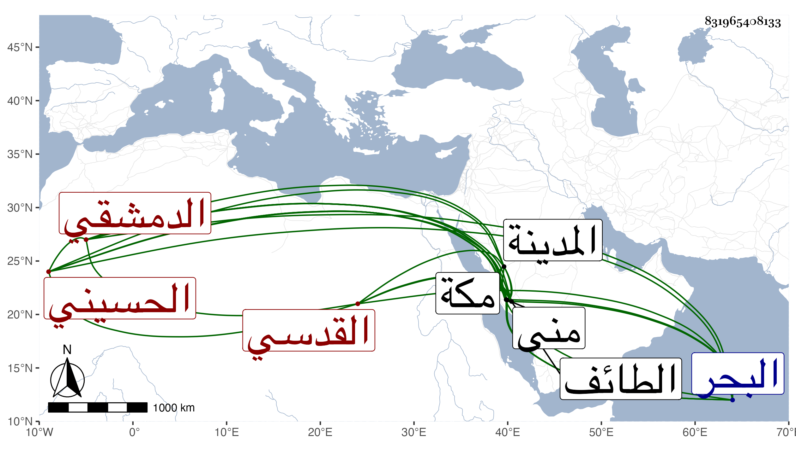

0902Sakhawi.DawLamic.ITO20230111-ara1.EIS1600.831965408133
Biography ID: 831965408133
1000
علي بن محمد بن أبي بكر الحسيني القدسي ثم الدمشقي ويعرف بصحبة الشهاب بن الأخصاصي ومجاورته معه . لقيني بمكة في مجاورتي الثالثة فلازمني وسمع مني في موسم سنة خمس وثمانين بمنى المسلسل وحديث زهير وغير ذلك وسافر معي بعد إلى المدينة النبوية فأقام معي إقامتي بها وأكثر عني مع الجماعة وكذا لقيني في المجاورة بعدها وكان قدم من البحر وتخلف عنا في كلا المجاورتين بمكة وفيه خدمة وشفقة وأكثر إقامته بالطائف ونحوها .
